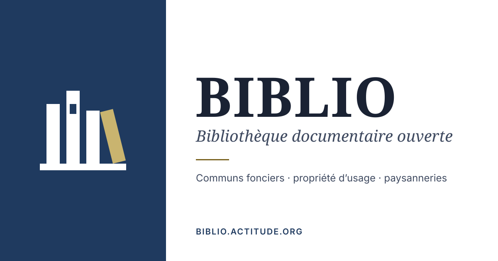

BIBLIO — marque « rayonnage commun »
Trois dos de livres sur une tablette partagée ; le quatrième, penché, est le livre qui circule — l’accès ouvert, le commun en usage. Encre en currentColor, livre qui circule en --brand-accent (or : #7a6321 en clair, #c9b46f en sombre). À juger à l’écran, à 100 % de zoom : les tailles indiquées sont des px CSS.
1. Échelle — marque principale (≥ 32 px) et version petite taille (≤ 24 px)
Clair · #ffffff
Sombre · #0f1620
2. Dans l’en-tête du site
Variante 32 px (taille actuelle de .brand-mark) :
Survol : la marque passe à --accent avec le nom (elle suit color du lien), le livre qui circule reste or.
3. Favicon dans une barre d’onglets
Le fichier favicon.svg suit le thème du système (prefers-color-scheme) — c’est le bon critère ici, puisque la barre d’onglets suit le système et non le bouton du site. Les deux états sont forcés ci-dessous.
Fichier réel (selon votre système) : 16 px · 32 px
4. Ancien / nouveau
Ancien · clair
Nouveau · clair
Ancien · sombre
Nouveau · sombre
| Ancien | Nouveau | |
|---|---|---|
| Couleurs | terre cuite #a44a2c, mousse #5a7048, or #a88930 en dur | currentColor + une variable d’accent |
| Clair / sombre | identique (couleurs figées) | suit le thème du site |
| Monochrome / une encre | non (deux aplats porteurs) | oui : --brand-accent: currentColor |
| Grille | courbes, filet de 1,4 u (≈ 0,35 px à 16 px) | aplats calés au pas de 2 u (1 px à 16 px) |
5. Carte sociale par défaut (1200 × 630, affichée réduite)

Jugée aussi à ~500 px de large (taille d’aperçu Mastodon/Bluesky) : le bloc marine et la marque restent identifiables, le sous-titre italique 38 px descend à ~16 px — limite basse acceptable.